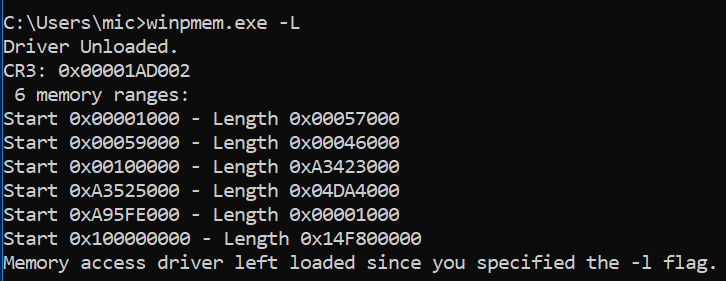
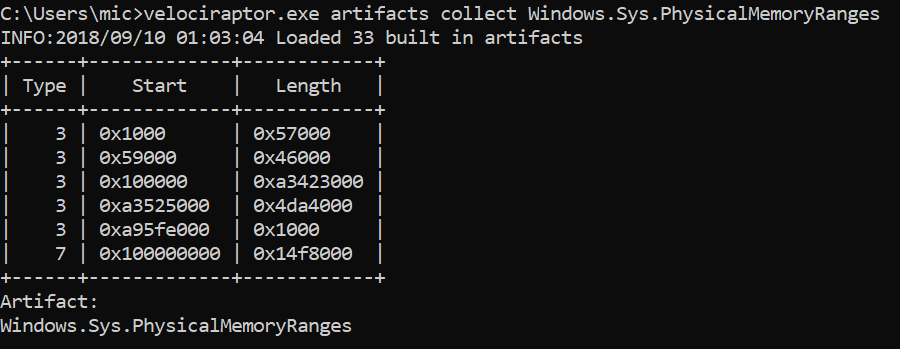
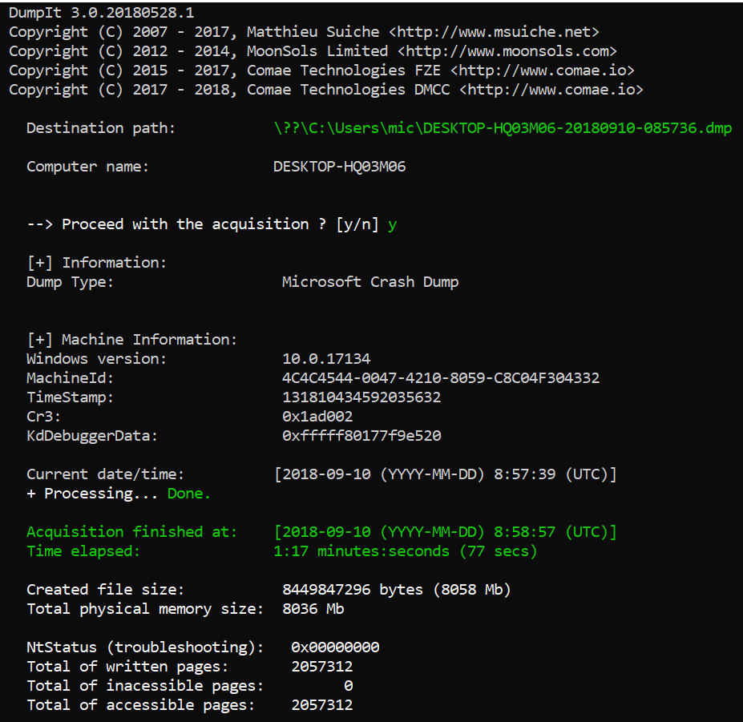
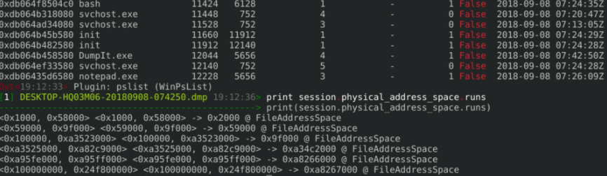
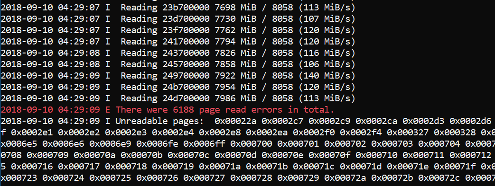
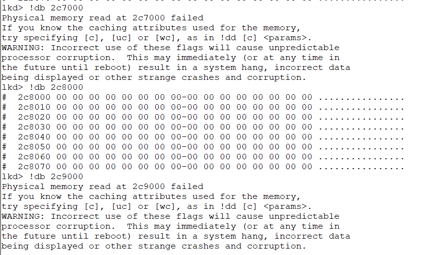
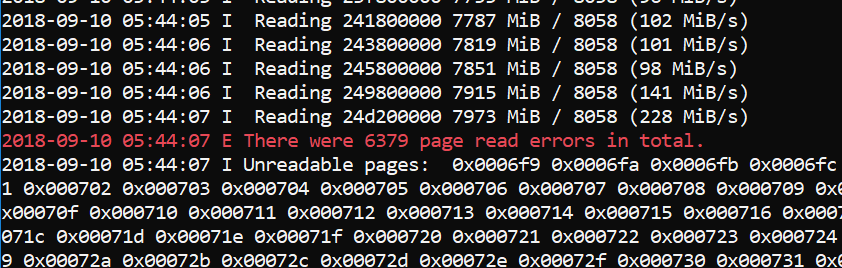
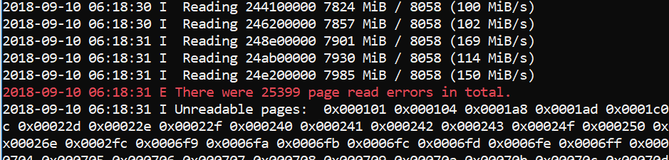
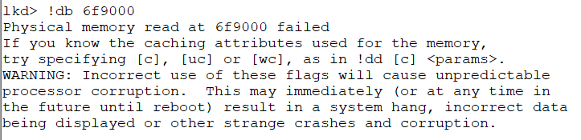
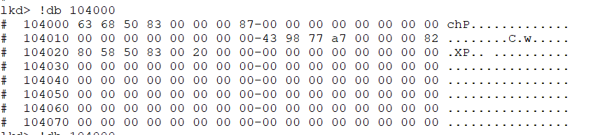

Rekall virtual secure mode and memory acquisition
This article was copied from the Rekall Forensics blog, posted on 2018-09-17. Copied with permission for historical preservation.
This blog post is about my recent work to track down and fix a bug in Winpmem - the open source memory acquisition utility. You can try the latest release at the Velocidex/c-aff4 release page (Note Winpmem moved from the Rekall project into the AFF4 project recently).
The story starts, as many do, with an email send to the SANS DFIR list asking about memory acquisition tools to use for VSM protected laptops. There are a number of choices out there, these days, but some readers proposed the old favorite: WinPmem. WinPmem is AFAIK the only open source memory acquisition tool. It was released quite some years ago and had not been updated for a while. However, it has been noted that it crashes on Windows systems with VSM enabled.
In 2017 Jason Hale gave an excellent talk at DFRWS: where he put a number of memory acquisition tools through their paces and found that most tools blue screened when run on VSM enabled systems. Subsequently some of these tools were fixed but I could not find any information as to how they were fixed. The current state of the world is that Winpmem appears to be one of those tools that crashes.
When I heard these reports I finally blew the dust off my Windows machine and enabled VSM. I then tried to acquire with the released winpmem (v3.0.rc3) and I can definitely confirm it BSODs right away! Not good at all!
At first I thought that the physical memory range detection is a problem. Maybe under VSM the memory ranges we detect with WinPmem are wrong and this makes us read into invalid physical memory ranges? Most tools get the physical memory ranges using the undocumented kernel function MmGetPhysicalMemoryRanges() - which is only accessible in kernel mode.
To confirm, I got winpmem to just print out the ranges it got from that function using the -L flag. This flag makes winpmem just load the driver, report on the memory ranges and quit without reading any memory (so it should not crash).

These memory ranges look a bit weird actually - they are very different from what the same machine reports without VSM enabled.
The first thing I checked was another information source for the physical memory ranges. I wrote a Velociraptor artifact to collect the physical memory ranges as reported by the hardware manager in the Windows Registry (Since MmGetPhysicalMemoryRanges) is not accessible from userspace so the system writes the memory ranges into the Windows Registry on each boot). Note that you can also use meminfo from Alex Ionescu to dump memory ranges from userspace.

So this seems to agree with what the driver reports.
Finally I attempted to take the image with DumpIt - this is a great memory imager which did not crash either:

The DumpIt program produced a Windows crash dump image format. It is encouraging to see that the CR3 value reported by DumpIt was consistent with WinPmem's report. While DumpIt does not explicitly report the physical memory ranges it used, since it uses a crashdump format file, we can see the ranges encoded into the crashdump using Rekall:

So at this point I was convinced that the problem is unrelated to reading outside valid physical memory ranges - even DumpIt is using the same ranges as WinPmem but it does not crash!
Clearly any bug fix will involve updating the driver components (since all imager's userspace component just reads from the same ranges anyway). It had been years since I did any kernel development and my code signing certificate expired many years ago. These days code signing certs are much more expensive since they require EV certs. I was concerned that unsuspecting users would attempt to use WinPmem on VSM enabled systems (which are becoming more common) and cause BSOD. This poses an unacceptable risk.
I updated the DFIR list announcing that in my estimation we would need to fix the issue with the kernel driver and since my code signing cert expired I won't be able to do so. I felt the only responsible thing was to pull the download and advise users to consider an alternative product - at least for the time being.
What happened next was an amazing response from the DFIR community. I receives many emails generously offering to sponsor a code signing cert and people expressing regret over the possibility of Winpmem winding down. Finally Emre Tinaztepe from Binalyze has graciously offered to sign the new drivers and contribute them to the community. Thanks Emre! It is really awesome to see open source at work and the community coming together!
Fixing the bug
So I set out to see why Winpmem crashes. To do kernel development, one needs to install Visual Studio with the Driver Development Kit (DDK). This takes a long time and downloads several GB worth of software!
After some time I had the development environment set up, checked out the winpmem code and tried to replicate the crash with the newly built driver. To my surprise it did not crash and worked perfectly! At this point I was confused....
I turns out that the bug was fixed back in 2016 but I had totally forgotten about it (a touch of senility no doubt). I then forensically analyzed my email to discover a conversation with Jason Hale back in October 2016! Unfortunately my code signing cert ran out in August 2016 and so although the fix was checked in, I never rebuilt the driver for release - my bad :-(.
Taking a closer look at the bug fix, the key is this code:
char *source = extension->pte_mmapper->rogue_page.value + page_offset; try { // Be extra careful here to not produce a BSOD. We would rather // return a page of zeros than BSOD. RtlCopyMemory(buf, source, to_read); } except(EXCEPTION_EXECUTE_HANDLER) { WinDbgPrint("Unable to read from %p", source); RtlZeroMemory(buf, to_read); }
The code attempts to read the mapped page, but if a segfault occurs, rather than allow it to become a BSOD, the code traps the error and pads the page with zeros. At the time I thought this was a bit of a cop out - we don't really know why it crashes, but if we are going to crash, we would rather just zero pad the page than BSOD. Why would reading a page from physical RAM backed memory segfault?
To understand this we must understand what Virtualization Based Security is. Microsoft windows implements Virtual Secure Mode (VSM):
VSM leverages the on chip virtualization extensions of the CPU to sequester critical processes and their memory against tampering from malicious entities. ... The protections are hardware assisted, since the hypervisor is requesting the hardware treat those memory pages differently.
What this means in practice, is that some pages belonging to sensitive processes are actually unreadable from within the normal OS. Attempting to read these pages actually generates a segfault by design! Of course in the normal course of execution, the VSM container would never access those physical pages because they do not belong to it, but the hypervisor is actually implementing an additional hardware based check to make sure the pages can not be accessed. The above fix works because the segfault is caught and WinPmem just moves on to the next page avoiding the BSOD.
So I modified Winpmem to report all the PFNs that it was unable to read. Winpmem now prints a list of all unreadable pages at the end of acquisition:

You can see that there are not many pages protected by the hypervisor (around 25Mb in total). The pages are not contained in a specific region though - they are sprayed around all of physical memory. This actually makes perfect sense, but let's double check.
I ran the kernel debugger (windbg) to see if it can read the physical pages that WinPmem can not read. Windbg has the !db command which reads physical memory.

Compare this output to the previous screenshot which indicates Winpmem failed to read PFN 0x2C7 and 0x2C9 (but it could read 0x2C8). Windbg is exactly the same - it too can not read those pages presumably protected by VSM.
Representing unreadable pages
This is an interesting development actually. Disk images have for a long time had the possibility of a sector read error, and disk image formats have evolved to account for such a possibility. Sometimes when a sector is unreadable, we can zero pad the sector, but most forensic disk images have a way of indicating that the sector was actually not readable. But this never happened before in memory images, because it was inconceivable that we could not read from RAM (as long as we had the right access!).
Winpmem uses the AFF4 format by default, and luckily AFF4 was designed specifically with forensic imaging in mind (See section 4.4. Symbolic stream aff4:UnreadableData). Currently the AFF4 library fills an unreadable page with "UNREADABLE" string to indicate this page was protected.
Note that if the imaging format does not support this (e.g. RAW images or crashdumps) than we can only ever zero pad unreadable pages and then we don't know if these pages were originally zero or were unreadable.
PTE Remapping Vs. MmMapIoSpace
Those who have been following winpmem for a while are probably aware that winpmem uses a technique called PTE remapping by default. All memory acquisition tools have to map the physical memory into the kernel's virtual address space - after all software can only ever read the virtual address space, and can not access physical memory directly.
There are typically 4 techniques for mapping physical memory to virtual memory:
- Use of \.\PhysicalMemory device - this is an old way of exporting physical memory to userspace and has been locked down for ages by Windows.
- Use of the undocumented MmMapMemoryDumpMdl() function to map arbitrary physical pages to kernel space.
- Use of the MmMapIoSpace() function. This function is typically used to map PCI devices DMA buffers into kernel space.
- Direct PTE remapping - the technique used by WinPmem.
Memory acquisition is by definition an incorrect operation when viewed from the point of view of OS stability. For example, running Winpmem's MmMapIoSpace() mode under the driver verifier will produce a bugcheck 0x1a with code 0x1233 "A driver tried to map a physical memory page that was not locked. This is illegal because the contents or attributes of the page can change at any time."
This is technically correct - we are mapping some random pages of system physical memory into our virtual memory space - but we don't actually own these pages (i.e. we never locked them) so anyone could at any time just go ahead and use them from under us. Obviously if we want to write a kernel driver then by definition mapping physical memory we do not own is bad! Yet this is what memory acquisition is all about!!1
The other interesting issue is caching attributes. Most people's gut reaction is that direct PTE manipulation should be less reliable since it essentially goes behind the OS's back and directly maps physical pages ignoring memory caching attributes. The reality is that the OS performs a lot of extra checks which are designed to trap erroneous use of APIs. For example, it may fail a request for MmMapIoSpace() if the cache attributes are incorrect - this makes sense if we are actually trying to read and write to the memory and depend on cache coherence, but if we are just acquiring the memory it doesn't matter - we would much rather get the data than worry about caching. Because we are going to have a lot of smear in the image anyway, caching really does not affect imaging in any measurable way.
Winpmem implements both PTE Remapping and MmMapIoSpace() modes. MmMapIoSpace() typically fails to collect more pages though. Here is the output from the MmMapIoSpace() method vs. PTE Remapping method side by side:
 |
 |
 |
 |
| Total unreadable pages with PTE Remapping | Total Unreadable pages with MmMapIoSpace() function. |
As can be seen, the MmMapIoSpace() method fails to read more pages, and the pages it fails to read are still accessible as proven by the kernel debugger.
Final notes
This post just summarises my understanding of how memory acquisition with VSM works. I may have got it completely wrong! If you think so, please comment below or on the DFIR/Rekall/Winpmem mailing list. It kind of makes sense to me that winpmem can not read protected pages, and even the kernel debugger cannot read those same pages. However, I checked the image that DumpIt produced, and it actually contains data (i.e. not all zeros) in the same pages which are supposed to be unreadable. The other interesting thing is that DumpIt reports no errors reading pages (see the screenshot above), so it claims to have read all pages (including those protected by VSM). I don't know if DumpIt implements some other novel way to read through the hypervisor restrictions or maybe it has a bug like an uninitialized buffer so these failed pages return random junk? Or maybe I have a deep misunderstanding of the whole thing (most likely). More tool testing is required!
Thanks
I would like to extend my gratitude to Emre Tinaztepe from Binalyze for his patient testing and signing the drivers. Also thanks for Matt Suiche for feedback and doing a lot of excellent original research and producing such cool tools.